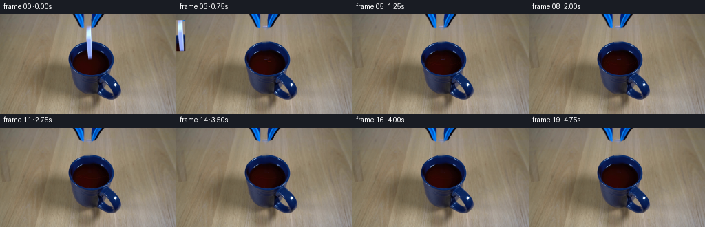
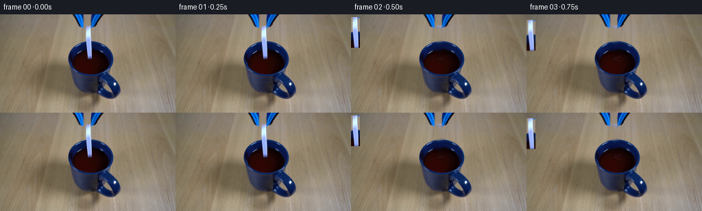

CODING AGENTS AS PIXEL WORLD MODELS
traex/DeepSeek-V4.1-Flash · 0047
点击播放 · 原生 RGB 像素
逐轮保存的候选
回放视频、检查图与代码变化。
每份候选均可单独播放。实际图片检查记录在下方工具轨迹中。
候选 01播放与检查图
点击播放 · 原生 RGB 像素


展开代码变化
--- 上一保存版本 +++ 本次保存版本 @@ -0,0 +1,225 @@ +from pathlib import Path + +import cv2 +import numpy as np + +import artifact_io + + +W, H, N = 256, 144, 20 +FPS = 4 + + +def _rounded_mask(x0, y0, x1, y1, radius, scale=4): + mask = np.zeros(((y1 - y0) * scale, (x1 - x0) * scale), np.uint8) + cv2.rectangle( + mask, + (radius * scale, 0), + (mask.shape[1] - radius * scale - 1, mask.shape[0] - 1), + 255, + -1, + cv2.LINE_AA, + ) + cv2.rectangle( + mask, + (0, radius * scale), + (mask.shape[1] - 1, mask.shape[0] - radius * scale - 1), + 255, + -1, + cv2.LINE_AA, + ) + for cx, cy in ( + (radius * scale, radius * scale), + (mask.shape[1] - radius * scale - 1, radius * scale), + (radius * scale, mask.shape[0] - radius * scale - 1), + (mask.shape[1] - radius * scale - 1, mask.shape[0] - radius * scale - 1), + ): + cv2.circle(mask, (cx, cy), radius * scale, 255, -1, cv2.LINE_AA) + return cv2.resize(mask, (x1 - x0, y1 - y0), interpolation=cv2.INTER_AREA) + + +def _clean_plate(source): + """Remove the held domino while retaining its source-lit surroundings.""" + x0, x1, y0, y1 = 124, 135, 18, 65 + region_mask = _rounded_mask(0, 0, x1 - x0, y1 - y0, 2) + binary = np.zeros((H, W), np.uint8) + binary[y0:y1, x0:x1] = (region_mask > 110).astype(np.uint8) * 255 + + inpainted = cv2.inpaint(source, binary, 3, cv2.INPAINT_TELEA) + clean = source.astype(np.float32) + src = source.astype(np.float32) + for y in range(y0, y1): + left = src[y, x0 - 3 : x0 - 1].mean(axis=0) + right = src[y, x1 + 1 : x1 + 3].mean(axis=0) + for x in range(x0, x1): + a = region_mask[y - y0, x - x0] / 255.0 + if a <= 0: + continue + t = (x - x0 + 0.5) / (x1 - x0) + interpolated = left * (1.0 - t) + right * t + # Texture is useful in the wood; the liquid is smoother. + texture_weight = 0.48 if y < 41 else 0.20 + fill = interpolated * (1.0 - texture_weight) + inpainted[y, x] * texture_weight + clean[y, x] = clean[y, x] * (1.0 - a) + fill * a + return np.clip(clean, 0, 255).astype(np.uint8) + + +def _domino_sprite(source): + x0, y0, x1, y1 = 123, 14, 136, 67 + color = source[y0:y1, x0:x1].copy() + alpha = _rounded_mask(0, 0, x1 - x0, y1 - y0, 2).astype(np.float32) / 255.0 + alpha[:4] = 0 + alpha[-4:] = 0 + return color, alpha + + +def _ellipse_mask(cx, cy, rx, ry, feather=2.0): + yy, xx = np.mgrid[0:H, 0:W].astype(np.float32) + distance = np.sqrt(((xx - cx) / rx) ** 2 + ((yy - cy) / ry) ** 2) + return np.clip((1.0 - distance) * (rx / feather), 0.0, 1.0) + + +def _ripple(frame, amount, age): + if amount <= 0: + return frame + + cx, cy = 134.0, 65.5 + liquid = _ellipse_mask(cx, cy + 2.5, 28.5, 17.0, feather=2.2) + liquid *= amount + out = frame.astype(np.float32) + overlay = out.copy() + + phase = np.clip(age, 0.0, 1.0) + for ring_index in range(3): + p = phase - ring_index * 0.13 + if p <= 0 or p >= 1.05: + continue + fade = (1.0 - np.clip(p, 0.0, 1.0)) ** 1.35 + rx = 3.0 + 23.0 * p + ry = 1.2 + 7.2 * p + center_y = cy + 1.5 + strength = 0.42 * fade + cv2.ellipse( + overlay, + (int(round(cx)), int(round(center_y))), + (int(round(rx)), int(round(ry))), + 0, + 0, + 360, + (28, 3, 3), + max(1, int(round(1.35 - 0.55 * p))), + cv2.LINE_AA, + ) + cv2.ellipse( + overlay, + (int(round(cx)), int(round(center_y - 0.7))), + (max(1, int(round(rx))), max(1, int(round(ry)))), + 0, + 18, + 164, + (104, 31, 23), + 1, + cv2.LINE_AA, + ) + out = out * (1.0 - liquid[..., None] * strength) + overlay * (liquid[..., None] * strength) + + # A compact contact glint is visible for the first few frames after entry. + entry = max(0.0, 1.0 - age * 4.2) + if entry > 0: + yy, xx = np.mgrid[0:H, 0:W].astype(np.float32) + glint = np.exp(-(((xx - cx) / 4.0) ** 2 + ((yy - (cy - 3.0)) / 1.5) ** 2)) + glint *= liquid * entry * 0.28 + out += glint[..., None] * np.array([35.0, 32.0, 43.0], np.float32) + + return np.clip(out, 0, 255).astype(np.uint8) + + +def _compose_domino(frame, sprite, alpha, dx, dy, angle, opacity, tint): + color, base_alpha = sprite + h, w = base_alpha.shape + center = (w * 0.5 - 0.5, h * 0.5 - 0.5) + matrix = cv2.getRotationMatrix2D(center, angle, 1.0) + matrix[:, 2] += (dx, dy) + warped_color = cv2.warpAffine( + color, + matrix, + (W, H), + flags=cv2.INTER_LINEAR, + borderMode=cv2.BORDER_REFLECT_101, + ).astype(np.float32) + warped_alpha = cv2.warpAffine( + base_alpha, + matrix, + (W, H), + flags=cv2.INTER_LINEAR, + borderMode=cv2.BORDER_CONSTANT, + borderValue=0, + ) + warped_alpha = np.clip(warped_alpha * opacity, 0.0, 1.0) + warped_color = warped_color * (1.0 - tint) + np.array([43.0, 7.0, 4.0], np.float32) * tint + + # A thin cool rim keeps the ceramic readable as it crosses the dark liquid. + out = frame.astype(np.float32) + out = out * (1.0 - warped_alpha[..., None]) + warped_color * warped_alpha[..., None] + return np.clip(out, 0, 255).astype(np.uint8) + + +def _smoothstep(x): + x = np.clip(x, 0.0, 1.0) + return x * x * (3.0 - 2.0 * x) + + +def build_frames(source): + clean = _clean_plate(source) + sprite = _domino_sprite(source) + frames = [] + release_time = 0.55 + + for index in range(N): + if index <= 1: + frames.append(source.copy()) + continue + + t = index / FPS + elapsed = max(0.0, t - release_time) + fall = min(29.0, 105.0 * elapsed * elapsed) + progress = fall / 29.0 + frame = clean.copy() + + entry_age = max(0.0, (fall - 3.0) / 26.0) + ripple_amount = 0.0 + if fall > 2.5: + ripple_amount = float(np.clip(1.0 - max(0.0, t - 2.8) / 2.2, 0.0, 1.0)) + frame = _ripple(frame, ripple_amount, entry_age) + + # The domino leaves the jaws, accelerates down, and turns slightly as it enters. + tilt = 7.2 * _smoothstep(progress) + sink = _smoothstep((fall - 16.0) / 13.0) + opacity = 1.0 - 0.88 * sink + tint = 0.60 * sink + frame = _compose_domino( + frame, + sprite, + sprite[1], + 0.35 * progress, + fall, + tilt, + opacity, + tint, + ) + frames.append(frame) + + return np.asarray(frames, dtype=np.uint8) + + +def main(): + case_dir = Path(__file__).resolve().parent + source = np.asarray(cv2.imread(str(case_dir / "first_frame.png"))[:, :, ::-1], dtype=np.uint8) + frames = build_frames(source) + assert frames.shape == (N, H, W, 3) + assert np.array_equal(frames[0], source) + artifact_io.save(frames, case_dir) + + +if __name__ == "__main__": + main()
可观测工具轨迹
实际执行的命令与返回图片。
命令 1exit 0
/bin/bash -c "pwd && rg --files -g '"'!*__pycache__*'"' | sed -n '1,200p'"
命令 2exit 0
/bin/bash -c "sed -n '1,240p' prompt.txt"
命令 3exit 0
/bin/bash -c "sed -n '1,280p' GENERATION_RULES.md"
命令 4exit 0
/bin/bash -c 'file first_frame.png && identify first_frame.png 2>/dev/null || true && ls -lah'
命令 5exit 0
/bin/bash -c "sed -n '1,260p' artifact_io.py"
命令 6exit 0
/bin/bash -c "sed -n '1,260p' player_template.html"
命令 7exit 0
/bin/bash -c "python - <<'PY'
from PIL import Image
im=Image.open('first_frame.png').convert('RGB')
print(im.size, im.mode)
from collections import Counter
c=Counter(im.getdata())
print('unique',len(c))
for col,n in c.most_common(30): print(col,n)
PY"命令 8exit 0
/bin/bash -c "python - <<'PY'
try:
import cv2; print('cv2', cv2.__version__)
except Exception as e: print('no cv2',e)
try:
import scipy; print('scipy', scipy.__version__)
except Exception as e: print('no scipy',e)
PY"命令 9exit 0
/bin/bash -c "python - <<'PY'
from PIL import Image
im=Image.open('first_frame.png')
im.resize((1024,576),Image.Resampling.NEAREST).save('.tmp/first_big.png')
# dump ANSI-ish color blocks + coarse stats
import numpy as np
a=np.asarray(im)
for y in range(0,144,12):
vals=[]
for x in range(0,256,16):
p=a[y:y+12,x:x+16].reshape(-1,3).mean(0).astype(int)
vals.append('#%02x%02x%02x'%tuple(p))
print(f'{y:3d}', ' '.join(vals))
PY"命令 10exit 0
/bin/bash -c "python - <<'PY'
import cv2
im=cv2.imread('first_frame.png')
cv2.imwrite('.tmp/first_big.png',cv2.resize(im,None,fx=4,fy=4,interpolation=cv2.INTER_NEAREST))
# edge map
g=cv2.cvtColor(im,cv2.COLOR_BGR2GRAY)
e=cv2.Canny(g,30,80)
cv2.imwrite('.tmp/edges.png',cv2.resize(e,None,fx=4,fy=4,interpolation=cv2.INTER_NEAREST))
# report dominant edge segments
lines=cv2.HoughLinesP(e,1,3.14159/180,threshold=18,minLineLength=15,maxLineGap=4)
print(sorted([tuple(map(int,l[0])) for l in lines], key=lambda q:q[1])[:100])
PY"命令 11exit 0
/bin/bash -c "python - <<'PY'
from PIL import Image
im=Image.open('first_frame.png')
# six crops at 8x
boxes={'top':(90,0,180,65),'mug':(110,50,180,140),'grabber':(20,0,100,130),'center':(80,20,190,130),'right':(180,0,256,144),'left':(0,0,110,144)}
for n,b in boxes.items():
c=im.crop(b); c.resize((c.width*6,c.height*6),Image.Resampling.NEAREST).save(f'.tmp/crop_{n}.png')
PY"命令 12exit 0
/bin/bash -c "python - <<'PY'
from PIL import Image
im=Image.open('first_frame.png')
# Terminal truecolor 2x4 px cells, x40..210 y0..144
for y in range(0,144,4):
s=''
for x in range(30,220,2):
p=im.getpixel((x,y+1))
# quantize 6 levels each
r,g,b=p
s+=f'\\x1b[48;2;{r};{g};{b}m '
print(s+'\\x1b[0m')
PY"命令 13exit 0
/bin/bash -c "python - <<'PY'
from PIL import Image
im=Image.open('first_frame.png')
# color segmentation: dump runs where blue dominance >20 per row at y=0,4,...140
for y in range(0,144,4):
runs=[]; on=False
for x in range(256):
r,g,b=im.getpixel((x,y)); q=(b>r+12 and b>g+5 and b>35)
if q and not on: st=x; on=True
if on and (not q or x==255):
en=x if not q else x+1
if en-st>=2: runs.append((st,en))
on=False
print(f'{y:3}:',runs)
PY"命令 14exit 0
/bin/bash -c "python - <<'PY'
from PIL import Image
im=Image.open('first_frame.png')
# print 128x72 ascii labels by color family
for y in range(0,144,2):
s=''
for x in range(0,256,2):
r,g,b=im.getpixel((x,y))
if b>r+20 and b>g+8: c='B'
elif b>r+5 and b>g+2 and b>45: c='b'
elif max(r,g,b)<45: c='#'
elif max(r,g,b)<80: c='x'
elif abs(r-g)<15 and abs(g-b)<15 and r>150: c='W'
elif r>g+10 and r>b+15: c='w'
elif g>r and g>b: c='o'
else: c='.'
s+=c
print(s)
PY"命令 15exit 1
/bin/bash -c "python - <<'PY'
import cv2, numpy as np
im=cv2.imread('first_frame.png')[:,:,::-1]
r,g,b=[im[:,:,i].astype(int) for i in range(3)]
masks={
'blue':(b>r+20)&(b>g+8)&(b>40),
'dark':(np.maximum.reduce([r,g,b])<55),
'bright':(np.minimum.reduce([r,g,b])>145),
'red':(r>g+20)&(r>b+20),
'neutral':(np.max(im,2)-np.min(im,2)<12),
}
for k,m in masks.items():
n,lab,stats,cent=cv2.connectedComponentsWithStats(m.astype('uint8'),8)
print('\\n',k,'total',m.sum())
for s,c in sorted(zip(stats[1:],cent[1:]),key=lambda z:-z[0,4])[:20]:
x,y,w,h,a=s; print(' bbox',x,y,w,h,'area',a,'cent',tuple(np.round(c,1)))
# unique dominant blue palette values
p=im[masks['blue']]
print('blue range',p.min(0),p.max(0),'mean',p.mean(0))
# dark components
PY"命令 16exit 0
/bin/bash -c "python - <<'PY'
import cv2, numpy as np
im=cv2.imread('first_frame.png')[:,:,::-1]
r,g,b=[im[:,:,i].astype(int) for i in range(3)]
masks={
'blue':(b>r+20)&(b>g+8)&(b>40),
'dark':(np.maximum.reduce([r,g,b])<55),
'bright':(np.minimum.reduce([r,g,b])>145),
'red':(r>g+20)&(r>b+20),
}
for k,m in masks.items():
n,lab,stats,cent=cv2.connectedComponentsWithStats(m.astype('uint8'),8)
comps=sorted([(int(s[4]),tuple(map(int,s[:4])),tuple(np.round(c,1))) for s,c in zip(stats[1:],cent[1:])],reverse=True)
print('\\n',k,'total',int(m.sum()))
for a,bb,c in comps[:20]: print(' area',a,'bbox',bb,'cent',c)
p=im[masks['blue']]
print('\\nblue range',p.min(0),p.max(0),'mean',p.mean(0))
PY"命令 17exit 0
/bin/bash -c "python - <<'PY'
from PIL import Image
im=Image.open('first_frame.png')
# ascii with edge-aware higher res around object x85..185, y0..125
for y in range(0,126,1):
s=''
for x in range(85,186,1):
r,g,b=im.getpixel((x,y))
if b>r+20 and b>g+8 and b>40: c='B'
elif r>g+20 and r>b+20: c='R'
elif max(r,g,b)<38: c='#'
elif max(r,g,b)<70: c='x'
elif min(r,g,b)>160: c='W'
elif r>170 and abs(r-g)<25 and abs(g-b)<25: c='w'
else: c='.'
s+=c
print(f'{y:3d} '+s)
PY"命令 18exit 0
/bin/bash -c "python - <<'PY'
from PIL import Image
im=Image.open('first_frame.png')
# dump actual RGB at key rows, every 2px with x index, only x90..185
for y in [0,10,20,25,30,35,40,45,50,55,60,65,70,75,80,85,90,95,100,105,110,115,120,125,130,135,140]:
print('Y',y)
for x in range(90,186,8):
print(f'{x}:{im.getpixel((x,y))}',end=' ')
print()
PY"命令 19exit 0
/bin/bash -c "python - <<'PY'
from PIL import Image
im=Image.open('first_frame.png')
# create edge marked ascii? Let's output an ANSI 2px-cell view x90-185, y0-125 but using quantized symbols only
# list rows of dominant color sequence via run-length categories for exact object extents
for y in range(0,126):
cats=[]
for x in range(80,196):
r,g,b=im.getpixel((x,y))
if b>r+25 and b>g+10 and b>80: c='B'
elif b>r+15 and b>g+5 and b>40: c='b'
elif r>g+22 and r>b+20: c='R'
elif max(r,g,b)<50: c='#'
elif min(r,g,b)>160: c='W'
elif r>g+7 and g>b+10: c='w'
else: c='.'
cats.append(c)
runs=[]; st=0
for i in range(1,len(cats)+1):
if i==len(cats) or cats[i]"'!=cats[st]:
if i-st>=2 and cats[st]!='"'.': runs.append(f'{80+st}-{79+i}{cats[st]}')
st=i
print(f'{y:3d}', ' '.join(runs))
PY"命令 20exit 0
/bin/bash -c "python - <<'PY'
from PIL import Image
im=Image.open('first_frame.png')
# average blue-dominant color clusters and sample bright object
import numpy as np
a=np.array(im); r,g,b=a[:,:,0].astype(int),a[:,:,1].astype(int),a[:,:,2].astype(int)
for name,m in {
'blue_core':(b>r+30)&(b>g+20)&(b>120),
'blue_mid':(b>r+20)&(b>g+5)&(b>40)&(b<=120),
'blue_dark':(b>r+15)&(b>g+5)&(b<40),
'red':(r>g+20)&(r>b+20),
'white':(np.min(a,2)>175),
'wood':(r>g+10)&(g>b+15)&(r>100),
}.items():
p=a[m]; print(name,len(p),'mean',p.mean(0).round(1),'q',np.quantile(p,[.1,.5,.9],axis=0).round().astype(int).tolist())
PY"命令 21exit 0
/bin/bash -c "python - <<'PY'
from PIL import Image
im=Image.open('first_frame.png')
# truecolor blocks around main tool body x95..175 y40..125, 1px sample every 2 pixels horizontally and 2 rows vertically
for y in range(40,126,2):
s=''
for x in range(95,175,2):
r,g,b=im.getpixel((x,y))
# quantized 4 levels
s+=f'\\x1b[48;2;{r};{g};{b}m '
print(s+'\\x1b[0m')
PY"命令 22exit 0
/bin/bash -c "python - <<'PY'
from PIL import Image
im=Image.open('first_frame.png')
# save regions as textual RGB? estimate dominant boundary contours via color masks and print bbox of high-brightness object within x100-175,y0-125
import numpy as np, cv2
a=np.array(im)
# highlights: min > 120 and blue-ish/neutral
for condname,cond in [
('blue_any', (a[:,:,2].astype(int)>a[:,:,0].astype(int)+25)),
('blue_bright', (a[:,:,2]>150)&(a[:,:,1]>80)),
('whiteish',(a.min(2)>130)&(a.max(2)-a.min(2)<80)),
]:
m=(cond.astype('uint8')*255)
cnts,_=cv2.findContours(m,cv2.RETR_EXTERNAL,cv2.CHAIN_APPROX_SIMPLE)
print(condname)
for c in sorted(cnts,key=cv2.contourArea,reverse=True)[:10]:
if cv2.contourArea(c)>15: print(' ',cv2.boundingRect(c),cv2.contourArea(c))
PY"命令 23exit 0
/bin/bash -c "python - <<'PY'
from PIL import Image
im=Image.open('first_frame.png')
# ANSI 2x4 px cells, x90..190, y0..128 with labels as line at left, 1 char per 1x2 block? use symbols better
for y in range(0,128,2):
s=''
for x in range(90,190,1):
r,g,b=im.getpixel((x,y))
if b>r+30 and b>g+18 and b>120: c='@'
elif b>r+20 and b>g+8 and b>45: c='B'
elif b>r+10 and b>g+4: c='b'
elif r>g+20 and r>b+20: c='R'
elif max(r,g,b)<35: c='#'
elif min(r,g,b)>185: c='W'
elif min(r,g,b)>145: c='w'
elif max(r,g,b)<80: c='x'
else: c='.'
s+=c
print(f'{y:3d} {s}')
PY"命令 24exit 0
/bin/bash -c "python - <<'PY'
from PIL import Image
im=Image.open('first_frame.png')
# quantize image to 16 colors just to see scene structure; save palette data and global positions
q=im.quantize(colors=20,method=Image.Quantize.MEDIANCUT)
q.resize((1024,576),Image.Resampling.NEAREST).save('.tmp/quant20.png')
pal=q.getpalette()[:60]
for i in range(20): print(i,tuple(pal[i*3:i*3+3]))
# use ANSI blocks quantized color classes 20 across x90..190 y0..130
import numpy as np
a=np.array(q)
chars='0123456789abcdefghij'
for y in range(0,130,2):
print(f'{y:3d} '+''.join(chars[a[y,x]] for x in range(90,190)))
PY"命令 25exit 0
/bin/bash -c "python - <<'PY'
from PIL import Image
im=Image.open('first_frame.png')
# map average color per 4x4 cell for x90..190 y40..125, categorize color by nearest named palette and print
import numpy as np
a=np.array(im).astype(float)
pal={'K':(12,8,10),'N':(30,32,45),'D':(52,58,82),'B':(10,40,95),'L':(160,180,253),'R':(40,7,4),'W':(210,240,252),'w':(155,145,125),'o':(105,90,70)}
for y in range(40,126,2):
s=''
for x in range(90,190,1):
p=a[y,x]
ds={k:np.linalg.norm(p-np.array(v)) for k,v in pal.items()}
k=min(ds,key=ds.get)
s+=k
print(f'{y:3d} {s}')
PY"命令 26exit 0
/bin/bash -c "python - <<'PY'
from PIL import Image
im=Image.open('first_frame.png')
# Print a 50x25 char view of x80..205 y30..130 with 2x4 downsample and proper palette clusters
import numpy as np
a=np.array(im)
pal={'@':(180,210,250),'B':(8,42,100),'D':(55,62,88),'#':(10,8,12),'R':(42,7,4),'W':(220,245,252),'w':(150,138,116),'o':(105,91,70),'.':(135,122,100)}
for y in range(30,130,4):
s=''
for x in range(80,205,2):
p=a[y:y+4,x:x+2].mean((0,1))
ds={k:np.linalg.norm(p-np.array(v)) for k,v in pal.items()}
s+=min(ds,key=ds.get)
print(f'{y:3d} {s}')
PY"命令 27exit 0
/bin/bash -c "python - <<'PY'
from PIL import Image
im=Image.open('first_frame.png')
# Probe exact silhouette in x90..190 by using alpha based on difference from local background? Save object mask based on saturation/dark/blue excluding bright wood
import numpy as np, cv2
a=np.array(im).astype(float)
r,g,b=a[:,:,0],a[:,:,1],a[:,:,2]
# estimated object: saturated or dark; threshold
m=((np.max(a,2)-np.min(a,2)>22) | (np.max(a,2)<110)) & (np.indices(r.shape)[0]>35)
m=m.astype('uint8')*255
# restrict and morph
m2=cv2.morphologyEx(m,cv2.MORPH_CLOSE,np.ones((3,3),np.uint8))
cv2.imwrite('.tmp/objectmask.png',cv2.resize(m2,None,fx=4,fy=4,interpolation=cv2.INTER_NEAREST))
# print contours
cnts,_=cv2.findContours(m2,cv2.RETR_EXTERNAL,cv2.CHAIN_APPROX_SIMPLE)
for c in sorted(cnts,key=cv2.contourArea,reverse=True)[:10]: print(cv2.boundingRect(c),cv2.contourArea(c))
PY"命令 28exit 0
/bin/bash -c "python - <<'PY'
from PIL import Image
import numpy as np
a=np.array(Image.open('first_frame.png'))
r,g,b=[a[:,:,i].astype(int) for i in range(3)]
# domino candidate thresholds
for name,m in {
'brightblue':(b>150)&(b>r+40)&(g>90),
'verybright':(b>220)&(g>160),
'whiteblue':(b>140)&(b>r+30),
}.items():
print('\\n',name)
ys,xs=np.where(m)
for y in range(10,70):
xx=np.where(m[y])[0]
if len(xx): print(y,int(xx.min()),int(xx.max()),len(xx))
PY"命令 29exit 0
/bin/bash -c "python - <<'PY'
from PIL import Image
im=Image.open('first_frame.png')
# dump local y25-45 x120..140 exact RGB
for y in range(20,50):
print(y, [im.getpixel((x,y)) for x in range(122,137)])
PY"命令 30exit 0
/bin/bash -c "python - <<'PY'
from PIL import Image
im=Image.open('first_frame.png')
for y in range(52,68):
print(y, [im.getpixel((x,y)) for x in range(124,137)])
PY"命令 31exit 0
/bin/bash -c "python - <<'PY'
from PIL import Image
im=Image.open('first_frame.png')
for y in range(80,120):
print(y, [im.getpixel((x,y)) for x in range(126,146)])
PY"命令 32exit 0
/bin/bash -c 'python generate.py'
命令 33exit 0
/bin/bash -c "python - <<'PY'
import cv2, numpy as np
im=cv2.imread('inspection.png')
cv2.imwrite('.tmp/inspection_big.png',cv2.resize(im,None,fx=2,fy=2,interpolation=cv2.INTER_NEAREST))
# transition big
im=cv2.imread('transition_check.png')
cv2.imwrite('.tmp/transition_big.png',cv2.resize(im,None,fx=2,fy=2,interpolation=cv2.INTER_NEAREST))
PY"命令 34exit 0
/bin/bash -c "python - <<'PY'
import cv2, numpy as np
frames=[cv2.imread(f'frames/{i:02d}.png') for i in range(20)]
# create larger contact sheet with 5 columns x4 rows
h,w=144,256
out=np.full((4*(h+18),5*w,3),30,np.uint8)
for i,f in enumerate(frames):
y=(i//5)*(h+18); x=(i%5)*w
out[y:y+h,x:x+w]=f
cv2.putText(out,f'{i} {i/4:.2f}s',(x+5,y+14),cv2.FONT_HERSHEY_SIMPLEX,.45,(240,240,240),1,cv2.LINE_AA)
cv2.imwrite('.tmp/sheet_all.png',out)
PY"命令 35exit 0
/bin/bash -c "python - <<'PY'
from PIL import Image
import numpy as np
# Build focused x80..190 y0..125 crops for every frame at 3x in a 5x4 grid
ims=[Image.open(f'frames/{i:02d}.png').crop((75,0,195,128)).resize((360,384),Image.Resampling.NEAREST) for i in range(20)]
out=Image.new('RGB',(360*5,384*4),(20,20,24))
from PIL import ImageDraw
d=ImageDraw.Draw(out)
for i,im in enumerate(ims):
x=(i%5)*360; y=(i//5)*384
out.paste(im,(x,y)); d.text((x+5,y+3),f'{i:02d}',fill='white')
out.save('.tmp/focus_sheet.png')
PY"命令 36exit 0
/bin/bash -c "python - <<'PY'
from PIL import Image
im=Image.open('.tmp/focus_sheet.png')
# 2 rows at a time with 4x cells, preserving focus
for start in [0,10]:
crop=im.crop((0,(start//5)*384,1800,(start//5+2)*384))
crop.save(f'.tmp/focus_{start}.png')
PY"命令 37exit 0
/bin/bash -c "python - <<'PY'
from PIL import Image
import numpy as np
# show selected crops in terminal as xterm 1x2 cells, object region 90..190, y0..128
for i in [0,1,2,3,4,5,6,7,8,9,10,12,14,16,19]:
a=np.array(Image.open(f'frames/{i:02d}.png'))
print('\\nFRAME',i)
for y in range(0,128,4):
s=''
for x in range(90,190,2):
p=a[y:y+4,x:x+2].mean((0,1))
r,g,b=p
if b>r+35 and b>g+20 and b>120:c='@'
elif b>r+18 and b>g+6 and b>45:c='B'
elif b>r+10 and b>g+4:c='b'
elif r>g+18 and r>b+16:c='R'
elif max(p)<35:c='#'
elif min(p)>175:c='W'
elif min(p)>135:c='w'
elif max(p)<80:c='x'
else:c='.'
s+=c
print(f'{y:3d} {s}')
PY"命令 38exit 0
/bin/bash -c "python - <<'PY'
import generate as g, cv2, numpy as np
src=cv2.imread('first_frame.png')[:,:,::-1]
s=g._domino_sprite(src)
print('sprite',s[0].shape,s[0].dtype,s[1].shape,s[1].min(),s[1].max(),s[1].sum())
m=g._rounded_mask(0,0,13,53,2)
print('mask',m.shape,m.min(),m.max(),m.sum(),m[20,6])
# warp same
h,w=s[1].shape
center=(w*.5-.5,h*.5-.5)
M=cv2.getRotationMatrix2D(center,0,1.0); M[:,2]+=(0,0)
wa=cv2.warpAffine(s[1],M,(256,144),flags=cv2.INTER_LINEAR,borderValue=0)
print('warped alpha',wa.min(),wa.max(),wa.sum(),np.count_nonzero(wa))
# run frame
frames=g.build_frames(src)
print('frame diffs',[(i,int(np.abs(frames[i].astype(int)-frames[i-1]).sum())) for i in range(1,20)])
for i in [2,3,5,8,12,16,19]:
yy,xx=np.where(np.abs(frames[i].astype(int)-src).sum(2)>20)
print(i,'diff bbox', (xx.min(),yy.min(),xx.max(),yy.max()) if len(xx) else None)
PY"命令 39exit 0
/bin/bash -c "python - <<'PY'
import generate as g, cv2, numpy as np
src=cv2.imread('first_frame.png')[:,:,::-1]
clean=g._clean_plate(src); sprite=g._domino_sprite(src)
fr=g._compose_domino(clean,sprite,sprite[1],0,29,7.2,1,0)
print('compose diff',np.abs(fr.astype(int)-clean.astype(int)).sum(),np.where(np.abs(fr.astype(int)-clean.astype(int)).sum(2)>10)[0].min(),np.where(np.abs(fr.astype(int)-clean.astype(int)).sum(2)>10)[1].min())
# inspect sprite nonzeros
print('sprite center col color',sprite[0][25,6],sprite[1][25,6])
print('frame center color',fr[25+29,126], 'clean',clean[25+29,126])
# actual frames loaded from disk vs built
frames=g.build_frames(src)
for i in range(20):
print(i,'vs src',np.abs(frames[i].astype(int)-src.astype(int)).sum(),'vs clean',np.abs(frames[i].astype(int)-clean.astype(int)).sum())
PY"命令 40exit 0
/bin/bash -c "python - <<'PY'
import generate as g, cv2, numpy as np
src=cv2.imread('first_frame.png')[:,:,::-1]
clean=g._clean_plate(src); sprite=g._domino_sprite(src)
for dy in [0,10,29,40]:
fr=g._compose_domino(clean,sprite,sprite[1],0,dy,0,1,0)
print('dy',dy)
for y in range(20,80,4): print(y,''.join('#' if fr[y,x,2]>fr[y,x,0]+20 and fr[y,x,2]>80 else '.' for x in range(115,145)))
PY"命令 41exit 0
/bin/bash -c "python - <<'PY'
import generate as g, cv2, numpy as np
src=cv2.imread('first_frame.png')[:,:,::-1]
s=g._domino_sprite(src)
h,w=s[1].shape; M=cv2.getRotationMatrix2D((w*.5-.5,h*.5-.5),0,1.0)
M[:,2]+=(0,29)
wc=cv2.warpAffine(s[0],M,(256,144),flags=cv2.INTER_LINEAR,borderMode=cv2.BORDER_REFLECT_101)
wa=cv2.warpAffine(s[1],M,(256,144),flags=cv2.INTER_LINEAR,borderValue=0)
print('M',M)
print('alpha at sprite positions',[(y,x,wa[y,x]) for y,x in [(30,128),(40,128),(50,128),(60,128),(70,128)]])
print('wc',[(y,x,wc[y,x]) for y,x in [(30,128),(40,128),(50,128),(60,128),(70,128)]])
print('source',[(y,x,s[0][y,x]) for y,x in [(10,6),(20,6),(30,6),(40,6),(50,6)]])
print('nonzeros bbox')
y,x=np.where(wa>0); print(x.min(),y.min(),x.max(),y.max())
PY"命令 42exit 0
/bin/bash -c "python - <<'PY'
import generate as g, cv2, numpy as np
src=cv2.imread('first_frame.png')[:,:,::-1]
s=g._domino_sprite(src)
print('alpha rows sums',[(y,int(s[1][y].sum())) for y in range(53)])
print('alpha row 20 nonzero',np.where(s[1][20]>0)[0])
# determine mask error: rounded mask created at 4x then resized; radius geometry? print
m=g._rounded_mask(0,0,13,53,2)
print('mask rows nonzero',[(y,np.where(m[y]>0)[0].tolist()) for y in range(0,53,5)])
PY"命令 43exit 0
/bin/bash -c "python - <<'PY'
import generate as g, cv2, numpy as np
src=cv2.imread('first_frame.png')[:,:,::-1]
clean=g._clean_plate(src)
d=np.abs(src.astype(int)-clean.astype(int)).sum(2)
print('changed',np.count_nonzero(d),'max',d.max())
ys,xs=np.where(d>0); print(xs.min(),ys.min(),xs.max(),ys.max())
print('x0 changes',[(y,d[y,0],src[y,0],clean[y,0]) for y in range(0,144) if d[y,0]>0][:20])
print('outside region count',np.count_nonzero(d[:, :124])+np.count_nonzero(d[:, 135:]))
PY"命令 44exit 0
/bin/bash -c "python - <<'PY'
import cv2, numpy as np
src=cv2.imread('first_frame.png')[:,:,::-1]
for i in [0,2,3,4,5,12,19]:
im=cv2.imread(f'frames/{i:02d}.png')[:,:,::-1]
d=np.abs(im.astype(int)-src.astype(int)).sum(2)
ys,xs=np.where(d>20)
print(i,'n',len(xs),'bbox',(xs.min(),ys.min(),xs.max(),ys.max()) if len(xs) else None,'max',d.max())
# x around domino at y30,50
print(' center',[(y,tuple(im[y,128])) for y in [20,30,40,50,60,70]])
PY"保存候选 1 份；完成命令 44 次；可验证图片返回 0 张。原始 API 响应与完整日志保留在本地。